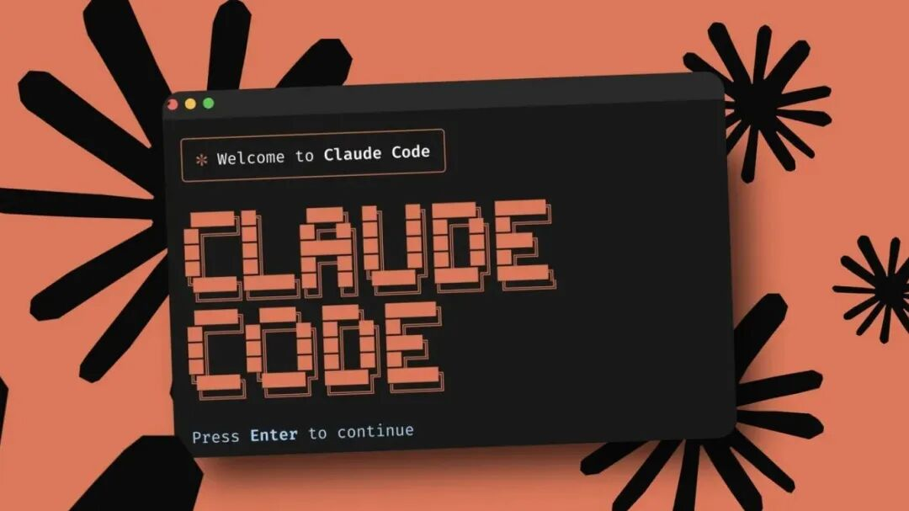

ABOUT
在 Claude Code 中，想要让模型的思考更深入、更系统、更高质量，其实并不复杂。
你可以通过一些简单手段，就能榨干它的思考深度，让它像资深架构师一样认真琢磨。
Claude Code 内置了扩展思考（Extended Thinking）机制，默认是开启的。
这意味着在面对复杂问题时，它会先在后台深入推理，再给你输出结果。
2026 年的最新版本（尤其是 Opus 4.6 系列）引入了自适应思考。模型会根据任务难度自动分配思考资源，而不是固定额度。
有几个“魔法词”手动控制思考的强度，让它开大招。按思考强度从低到高大致分为几个级别：
【最基础的是“think”或“思考”】，相当于告诉 Claude：“别急着下结论，先想想。”
这会让它分配几千个内部思考 token，适合中等复杂度的任务，比如优化一段函数或修复小 bug。
再往上走是【“think hard”或“好好想”“多想想”】，模型思考预算明显增加，大概到一万 token 左右。
这个级别性价比最高，很多开发者日常就靠它。遇到需要权衡方案、分析优缺点的场景，比如选择数据库架构或设计 API 接口，用这个词基本能让输出质量跳一个档次。
更高阶的是【“think harder”或“think really hard”“深思”“仔细深思”】，这时思考 token 可以飙到两三万级别。Claude 会更全面地探索边界情况、自我纠错、对比多种路径，特别适合跨模块的重构、并发问题或棘手的安全漏洞。
顶配则是【“ultrathink”或“ultra think”“超级思考”“极致思考”】。一旦触发这个，模型几乎把能用的思考预算全拉满（接近 3.2 万 token），推理深度会明显跃升。你在处理全域架构设计、极难 bug 定位或高风险改动时，可以直接上这个提示词。
按下这个涡轮增压按钮，虽然响应时间会长一点，但准确率和完整度往往高出好几个层次。
你用自然语言就能启动不同级别的思考深度，比如：
“ultrathink：重新设计这个微服务的拆分方案，要从性能、可维护性、部署成本、未来扩展四个维度全面评估。”
或者
“think hard 分析认证流程的所有潜在安全隐患，给出完整优化方案。”
除了触发词，还有一套Chain of Thought思考链技巧，能进一步逼模型把推理过程写出来。
在给出最终答案或代码前，先要求它用
“在给出方案前，先在 ｛thinking｝
1. 理解需求和所有约束；
2. 列出可行方案及优缺点对比；
3. 选出最佳路径并解释理由；
4. 规划具体实现步骤；
5. 考虑边缘case和错误处理。
6. 最后再输出代码。”
这个模板几乎适用于所有场景，一旦 Claude 开始输出结构化的思考过程，它的结论质量通常会提升 30%–50%。
想叠加效果更好？
可以结合 Claude Code 的其他功能一起用。
比如先输入 /plan 进入纯规划模式，让它先不写代码、只做深度分析和步骤拆解；等规划靠谱了，再说开始实现，这时候再加个 ultrathink，思考质量往往最高。
另外，保持上下文干净也很关键。经常用 /clear 或 /compact 清掉无关历史，避免噪音干扰深度推理。
还可以自己做自定义 slash 命令，比如建一个 ultra.md 文件，内容是“ultrathink + 结构化 CoT”，以后直接 /ultra + 任务描述，就能一键调用最高思考档。
总的来说，日常 80% 的任务用 think hard 就够了；真正卡壳的难题上 think harder 或 ultrathink；架构级大活儿再配上 /plan 和 CoT 模板，基本能把 Claude 的潜力榨到极致。
这些方法都是 2026 年社区里验证过的“实锤”玩法。你现在最常卡在哪类问题上？是并发、性能、重构还是安全设计？